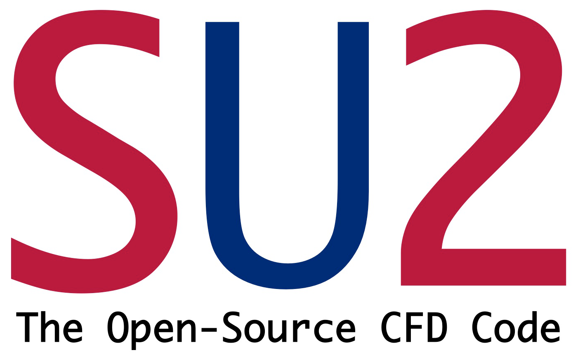

 Senior Research Scientist at Robert Bosch LLC in Sunnyvale, CA in the field of multiphysics simulation and optimization. Received PhD and MS degrees in the Department of Aeronautics & Astronautics at Stanford University, and holds a BS in Aerospace Engineering from the University of Notre Dame. Research interests include computational fluid dynamics (CFD), optimal shape design via adjoint-based methods, and high performance computing. One of the original developers and a maintainer of the open-source SU2 software package for multiphysics analysis and design.
.Publications
Journal Articles
- Economon, T. D., "Simulation and Adjoint-based Design for Variable Density Incompressible Flows with Heat Transfer," AIAA Journal (under review).
- Thomas D., Cerquaglia M. L., Boman, R., Economon, T. D., Alonso, J. J., Dimitriadis, G., Terrapon, V. E., "CUPyDO - An integrated Python environment for coupled fluid-structure simulations," Advances in Engineering Software, Advances in Engineering Software, Vol. 128 (2019), pp. 69-85. doi: 10.1016/j.advengsoft.2018.05.007.
- Rubino A., Pini, M., Colonna, P., Albring, T., Nimmagadda, S., Economon, T. D., Alonso, J. J., "Adjoint-based fluid dynamic design optimization in quasi-periodic unsteady flow problems using a harmonic balance method," Journal of Computational Physics, 372 (1), pp. 220-235, 2018. doi: 10.1016/j.jcp.2018.06.023.
- Sanchez R., Albring T., Palacios R., Gauger N. R., Economon T. D., Alonso J. J., "Coupled adjoint‐based sensitivities in large‐displacement fluid‐structure interaction using algorithmic differentiation," Int J Numer Meth Engng. 2018;113:1081–1107. doi: 10.1002/nme.5700.
- Economon, T. D., Palacios, F., Alonso, J. J., Bansal, G., Mudigere, D., Deshpande, A., Heinecke, A., Smelyanskiy, M., "Performance optimizations for scalable implicit RANS calculations with SU2," Computers and Fluids, Vol. 129 (2016), pp. 146-158. doi: 10.1016/j.compfluid.2016.02.003.
- Economon, T. D., Palacios, F., Copeland, S. R., Lukaczyk, T. W., Alonso, J. J., "SU2: An Open-Source Suite for Multi-Physics Simulation and Design," AIAA Journal, Vol. 54, No. 3 (2016), pp. 828-846. doi: 10.2514/1.J053813.
- Economon, T. D., Palacios, F., Alonso, J. J., "Unsteady Continuous Adjoint Approach for Aerodynamic Design on Dynamic Meshes," AIAA Journal, Vol. 53, No. 9 (2015), pp. 2437-2453. doi: 10.2514/1.J053763.
Conference Papers
- Burghardt, O., Gauger, N., Economon. T. D., "Coupled Adjoint-based Design for Conjugate Heat Transfer in Variable Density Incompressible Flows," AIAA Aviation Forum 2019 (accepted).
- Venkatesan-Crome, C., Palacios R., Kattmann, T., Sanchez R., Gauger, N., Economon. T. D., "Discrete Adjoint for Unsteady Incompressible Flows using a Density-based Formulation," AIAA Aviation Forum 2019 (accepted).
- Gomes, C., Fossati, M., Maier, W., Alonso, J. J., Scoggins, J. B., Magin, T., Economon, T. D., "Numerical Study of Shock Interference Patterns for Nonequilibrium Gas Flows,'' AIAA Aviation Forum 2019 (accepted).
- Economon, T. D., "Simulation and Adjoint-based Design for Variable Density Incompressible Flows with Heat Transfer," AIAA Paper 2018-3111, AIAA AVIATION Forum, 2018 Multidisciplinary Analysis and Optimization Conference, Atlanta, GA, June 2018. [ ]
- Nimmagadda, S., Economon. T. D., Alonso, J. J., Ilario da Silva, C. R., Zhou, Y., Albring, T., "Low-cost unsteady discrete adjoints for aeroacoustic optimization using temporal and spatial coarsening techniques", AIAA Paper 2018-1911, 2018 AIAA/ASCE/AHS/ASC Structures, Structural Dynamics, and Materials Conference, AIAA SciTech Forum, Kissimmee, FL, January 2018.
- Singh, K., Drikakis, D., Frank, M., Kokkinakis, I. W., Alonso, J. J., Economon, T. D., van der Weide, E., "Comparison of the Finite Volume and Discontinuous Galerkin schemes for the Double Vortex Pairing Problem using the SU2 Software Suite", AIAA Paper 2018-1833, 2018 AIAA Aerospace Sciences Meeting, AIAA SciTech Forum, Kissimmee, FL, January 2018.
- Economon, T. D., Alonso, J. J., Albring, T., Gauger, N., "Adjoint Formulation Investigations of Benchmark Aerodynamic Design Cases in SU2," AIAA Paper 2017-4363, 35th AIAA Applied Aerodynamics Conference, AIAA AVIATION Forum, Denver, CO, June 2017. [ ]
- Molina, E. S., Spode, C., Gil Annes da Silva, R., Manosalvas-Kjono, D., Nimmagadda, S., Economon, T. D., Alonso, J. J., Righi, M., "Hybrid RANS/LES Implementation in SU2," AIAA Paper 2017-4284, 23rd AIAA Computational Fluid Dynamics Conference, AIAA AVIATION Forum, Denver, CO, June 2017.
- Munguia, B. C., Economon, T. D., Alonso, J. J., "A Discrete Adjoint Framework for Low-Boom Supersonic Aircraft Shape Optimization," AIAA Paper 2017-3326, 18th AIAA/ISSMO Multidisciplinary Analysis and Optimization Conference, AIAA AVIATION Forum, Denver, CO, June 2017.
- Zhou, Y., Albring, T., Gauger, N., Ilario da Silva, C. R., Economon, T. D., Alonso, J. J., "Reduction of Airframe Noise Components Using a Discrete Adjoint Approach," AIAA Paper 2017-3658, 18th AIAA/ISSMO Multidisciplinary Analysis and Optimization Conference, AIAA AVIATION Forum, Denver, CO, June 2017.
- Manosalvas-Kjono, D., Economon, T. D., Othmer, C., Jameson, A., "Computations of Active Flow Control for Heavy Vehicle Drag Reduction," AIAA Paper 2017-3567, 35th AIAA Applied Aerodynamics Conference, AIAA AVIATION Forum, Denver, CO, June 2017.[ ]
- Thomas D., Variyar, A., Boman, R., Economon, T. D., Alonso, J. J., Dimitriadis, G., Terrapon, V. E., "Staggered Strong Coupling Between Existing Fluid and Solid Solvers Through a Python Interface for Fluid-Structure Interaction Problems," Proceedings of the VII International Conference on Coupled Problems in Science and Engineering, Rhodes Island, Greece, June 2017.
- Zhou, Y., Albring, T., Gauger, N., Ilario da Silva, C. R., Economon, T. D., Alonso, J. J., "A Discrete Adjoint Approach for Jet-Flap Interaction Noise Reduction," AIAA Paper 2017-0130, AIAA Science and Technology Forum and Exposition, Grapevine, TX, January 2017.
- Sanchez, R., Albring, T., Palacios, R., Gauger, N. R., Economon, T. D., Alonso, J. J., "Optimal Actuation of Dielectric Membrane Wings using High-Fidelity Fluid-Structure Modelling," AIAA Paper 2017-0857, AIAA Science and Technology Forum and Exposition, Grapevine, TX, January 2017.
- Variyar, A., Economon, T. D., Alonso, J. J., "Design and Optimization of Unconventional Aircraft Configurations with Aeroelastic Constraints," AIAA Paper 2017-0463, AIAA Science and Technology Forum and Exposition, Grapevine, TX, January 2017.
- Economon, T. D., Papoutsis-Kiachagias, E., Kavvadias, I., Magoulas, N., Othmer, C., Giannakoglou, K., Alonso, J. J., "Assessing Adjoint-Derived Aerodynamic Sensitivities in the Presence of Flow Separation," ECCOMAS Congress 2016, Crete Island, Greece, June 2016.
- Sanchez, R., Kline, H. L., Thomas, D., Variyar, A., Righi, M., Economon, T. D., Alonso, J. J., Palacios, R., Terrapon, V., Dimitriadis, G., "Assessment of the Fluid-Structure Interaction capabilities for aeronautical applications of the open-source solver SU2," ECCOMAS Congress 2016, Crete Island, Greece, June 2016.
- Nimmagadda, S., Economon, T. D., Alonso, J. J., Ilario da Silva, C. R., "Robust uniform time sampling approach for the harmonic balance method," AIAA Paper 2016-3966, 46th AIAA Fluid Dynamics Conference, Washington, D.C., June 2016.
- Manosalvas, D., Economon, T. D., Othmer, C., Jameson, A., "Computational Design of Drag Diminishing Active Flow Control Systems for Heavy Vehicles," AIAA Paper 2016-4082, 8th AIAA Flow Control Conference, Washington, D.C., June 2016.[ ]
- Zhou, Y., Albring, T., Gauger, N., Economon, T. D., Alonso, J. J., "An Efficient Unsteady Aerodynamic and Aeroacoustic Design Framework Using Discrete Adjoint," AIAA Paper 2016-3369, 17th AIAA/ISSMO Multidisciplinary Analysis and Optimization Conference, Washington, D.C., June 2016.
- Variyar, A., Economon, T. D., Alonso, J. J., "Multifidelity Conceptual Design and Optimization of Strut-Braced Wing Aircraft using Physics-Based Methods," AIAA Paper 2016-2000, 54th AIAA Aerospace Sciences Meeting, San Diego, CA, January 2016. [ ]
- Sanchez, R., Palacios, R., Economon, T. D., Kline, H., Alonso, J. J., Palacios, F., "Towards a FluidStructure Interaction Solver for Problems with Large Deformations Within the Open-Source SU2 Suite," AIAA Paper 2016-0205, 57th AIAA/ASCE/AHS/ASC Structures, Structural Dynamics, and Materials Conference, San Diego, CA, January 2016. [ ]
- Kline, H., Economon, T. D., Alonso, J. J., "Multi-Objective Optimization of a Hypersonic Inlet Using Generalized Outflow Boundary Conditions in the Continuous Adjoint Method," AIAA Paper 2016-0912, 54th AIAA Aerospace Sciences Meeting, San Diego, CA, January 2016.[ ]
- Bansal, G., et al., "Accelerating Computational Fluid Dynamics Codes on Multi-/Many-Core Intel Platforms," 27th International Conference on Parallel Computational Fluid Dynamics, 2015. [ ]
- Zhou, Y., Albring, T., Gauger, N., Economon, T. D., Palacios, F., and Alonso, J. J., "A Discrete Adjoint Framework for Unsteady Aerodynamic and Aeroacoustic Optimization," AIAA Paper 2015-3355, 16th AIAA/ISSMO Multidisciplinary Analysis and Optimization Conference, Dallas, TX, June, 2015. [ ]
- Vitale, S., Gori, G., Pini, M., Guardone, A., Economon, T. D., Palacios, F., Alonso, J. J., and Colonna, P., "Extension of the SU2 open source CFD code to the simulation of turbulent flows of fluids modelled with complex thermophysical laws," AIAA Paper 2015-2760, 22nd AIAA Computational Fluid Dynamics Conference, Dallas, TX, June 2015. [ ]
- Lukaczyk, T., Wendorff, A., Colonno, M., Economon, T. D., Alonso, J. J., Orra, T., and Ilario da Silve, C. R., "SUAVE: An Open-Source Environment for Multi-Fidelity Conceptual Vehicle Design," AIAA Paper 2015-3087, 16th AIAA/ISSMO Multidisciplinary Analysis and Optimization Conference, Dallas, TX, June, 2015. [ ]
- Manosalvas, D., Economon, T. D., Palacios, F., and Jameson, A., "Techniques for the Design of Active Flow Control Systems in Heavy Vehicles," AIAA Paper 2015-3312, 33rd AIAA Applied Aerodynamics Conference, Dallas, TX, June, 2015. [ ]
- Kline, H., Palacios, F., Economon, T. D., Alonso, J. J., "Adjoint-Based Optimization of a Hypersonic Inlet," AIAA Paper 2015-3060, 22nd AIAA Computational Fluid Dynamics Conference, Dallas, TX, June 2015. [ ]
- Economon, T. D. , Palacios, F., Alonso, J. J., Bansal, G., Mudigere, D., Deshpande, A., Heinecke, A., Smelyanskiy, M., "Towards High-Performance Optimizations of the Unstructured Open-Source SU2 Suite," AIAA Paper 2015-1949, AIAA Infotech at Aerospace, AIAA SciTech, Kissimmee, FL, January, 2015. [ ]
- Palacios, F., Economon, T. D., Wendorff, A., Alonso, J. J., "Large-scale aircraft design using SU2," AIAA Paper 2015-1946, 53rd AIAA Aerospace Sciences Meeting, AIAA SciTech, Kissimmee, FL, January, 2015. [ ]
- Economon, T. D., Palacios, F., Alonso, J. J., "An Unsteady Continuous Adjoint Approach for Aerodynamic Design on Dynamic Meshes," AIAA Paper 2014-2300, 15th AIAA/ISSMO Multidisciplinary Analysis and Optimization Conference, AIAA Aviation, Atlanta, GA, June, 2014. [ ]
- Manosalvas, D., Economon, T. D., Palacios, F., and Jameson, A., "Finding Computationally Inexpensive Methods to Model the Flow Past Heavy Vehicles and the Design of Active Flow Control Systems for Drag Reduction", AIAA 2014-2404, 32nd AIAA Applied Aerodynamics Conference, AIAA Aviation, Atlanta, GA, June, 2014. [ ]
- M. Lopez, A. Sheshadri, K. Asthana J. Bull, J. Crabill, T. Economon, D. Manosalvas, J. Romero, J. Watkins, D. Williams, F. Palacios, and A. Jameson, " Verification and Validation of HiFiLES: a High-Order Navier-Stokes unstructured solver on multi-GPU platforms," AIAA Paper 2014-3168, 32nd AIAA Applied Aerodynamics Conference, AIAA Aviation, Atlanta, GA, June, 2014. [ ]
- Palacios, F., Economon, T. D., Aranake, A. C., Copeland, S. R., Lonkar, A. K., Lukaczyk, T. W., Manosalvas, D. E., Naik, K. R., Padron, A. S., Tracey, B., Variyar, A., and Alonso, J. J., "Stanford University Unstructured (SU2): Open-source analysis and design technology for turbulent flows," AIAA Paper 2014-0243, AIAA Science and Technology Forum and Exposition 2014: 52nd Aerospace Sciences Meeting, National Harbor, MD, January 13-17, 2014. [ ]
- Economon, T. D., Palacios, F., Alonso, J. J., "A Viscous Continuous Adjoint Approach for the Design of Rotating Engineering Applications," AIAA Paper 2013-2580, 21st AIAA Computational Fluid Dynamics Conference, San Diego, CA, June 24-27, 2013. [ ]
- Colonno, M. R., Palacios, F., Economon, T. D., Lonkar, A. K., Alonso, J. J., "An Adjoint-Based Aerodynamic Shape Optimization Methodology for Fairing Systems," AIAA Paper 2013-2649, 31st AIAA Applied Aerodynamics Conference, San Diego, CA, June 24-27, 2013. [ ]
- Palacios, F., Colonno, M. R., Aranake, A. C., Campos, A., Copeland, S. R., Economon, T. D., Lonkar, A. K., Lukaczyk, T. W., Taylor, T. W. R., Alonso, J. J., "Stanford University Unstructured (SU2): An open-source integrated computational environment for multi-physics simulation and design," AIAA Paper 2013-0287, 51st AIAA Aerospace Sciences Meeting including the New Horizons Forum and Aerospace Exposition, Grapevine, Texas, January 7-10, 2013. [ ]
- Economon, T. D., Palacios, F., Alonso, J. J., "Unsteady Aerodynamic Design on Unstructured Meshes with Sliding Interfaces," AIAA Paper 2013-0632, 51st AIAA Aerospace Sciences Meeting including the New Horizons Forum and Aerospace Exposition, Grapevine, Texas, January 7-10, 2013. [ ]
- Economon, T. D., Palacios, F., Alonso, J. J., "A Coupled-Adjoint Method for Aerodynamic and Aeroacoustic Optimization," AIAA Paper 2012-5598, 12th AIAA Aviation Technology, Integration, and Operations (ATIO) Conference and 14th AIAA/ISSM Multidisciplinary Analysis and Optimization Conference, Indianapolis, Indiana, September, 2012. [ ]
- Economon, T. D., Palacios, F., Alonso, J. J., "Optimal Shape Design for Open Rotor Blades," AIAA Paper 2012-3018, 30th AIAA Applied Aerodynamics Conference, New Orleans, Louisiana, June, 2012. [ ]
- Economon, T. D., Copeland, S. R., Alonso, J. J., Zeinali, M., Rutherford, D., "Design and Optimization of Future Aircraft for Assessing the Fuel Burn Trends of Commercial Aviation," AIAA Paper 2011-0267, 49th AIAA Aerospace Sciences Meeting, Orlando, Florida, January, 2011. [ ]
- Morris, S., Stephens, D., Economon, T. D., Blake, W., "Interior Duct Wall Pressure Downstream of a Low-Speed Rotor," AIAA Paper 2008-2893, 14th AIAA/CEAS Aeroacoustics Conference, Vancouver, British Columbia, May, 2008. [ ]
- Economon, T. D., "Effects of Wake Vortices on Commercial Aircraft," AIAA Paper 2008-1428, 46th Aerospace Sciences Meeting and Exhibit, Reno, Nevada, January, 2008. [ ]
Theses
- Economon, T. D., Optimal Shape Design Using an Unsteady Continuous Adjoint Approach, PhD thesis, Department of Aeronautics and Astronautics, Stanford University, 2014. [ ]
- Economon, T. D., Interior Duct Wall Pressure Downstream of a Low-Speed Rotor, Undergraduate thesis, Department of Aerospace and Mechanical Engineering, University of Notre Dame, 2008. [ ]